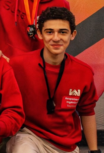

PRESIDENT
HUGO BOUBEL
President & legal representative • Founder Member
Tachyon Racing Society mentors high school teams in the international STEM Racing competition — from CAD and CFD to the podium.

Tachyon Racing Society is a loi 1901 association based in Île-de-France that mentors high school students participating in the STEM Racing competition.
With 3 dedicated volunteers and around 60 student beneficiaries aged 15–18, our mission is to give every student — regardless of background — the tools to compete at the highest level.
STEM Racing is a globally recognised competition with more than 60 countries participating. Sponsoring TRS puts your brand alongside students competing on the national and international stage — from Île-de-France to the World Finals.
SEE OUR RESULTS →

President & legal representative • Founder Member

Vice President • Local Operations management

Engineering coach • technical guidance • design support

Communication • media • sponsorship and outreach

Qualified for the 2026 World Finals • Wild Racing team member
Stem Racing 2024 World Finalist • Tachyon Racing team member
Stem Racing 2024 World Finalist • Tachyon Racing team member